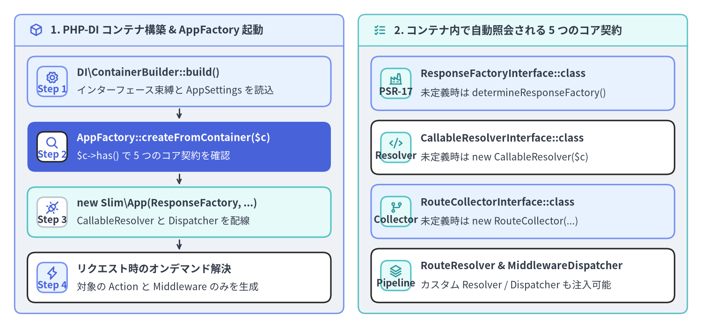
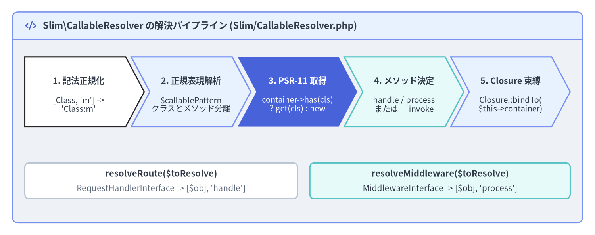

PSR-11 コンテナと Callable 解決
Slim 4（v4.15.3）は特定の DI コンテナを内部に束縛せず、AppFactory::createFromContainer($container) を通じてあらゆる PSR-11（Psr\Container\ContainerInterface） 準拠の DI コンテナと統合できます。PHP-DI（php-di/php-di） などの自動ワイヤリング対応コンテナと組み合わせることで、Slim\CallableResolver および Slim\MiddlewareDispatcher::addDeferred() が Single-Action コントローラ、PSR-15 ミドルウェア、ドメインリポジトリを必要なタイミングまで遅延解決（Lazy Resolution）します。

Source Code
from drawlib.canvas import save, setup
from drawlib.icons import phosphor
from drawlib.smartarts import CardList, Panel
from drawlib.styles import Colors, Styles
setup(width=192, height=90, dpi=150)
p_left = Panel(
"1. PHP-DI コンテナ構築 & AppFactory 起動",
style=Styles.Neutral.patch(shape_r=2.0),
header_style=Styles.PrimaryNeutral.patch(shape_line_width=1.2),
text_style=Styles.DarkBold.patch(text_size=11.0),
icon=phosphor.cube,
icon_style=Styles.PrimaryBold,
header_variant="filled",
header_height=8.5,
)
p_left.draw((4.0, 4.0), width=90.0, height=82.0)
lx, lw, lh = p_left.get_content_box((4.0, 4.0), width=90.0, height=82.0, padding=(3.5, 3.0))
cl_left = CardList(
style=Styles.White,
text_style=Styles.DarkBold.patch(text_size=10.5),
description_style=Styles.Dark.patch(text_size=10.0),
badge_shape="rounded_rect",
badge_style=Styles.PrimaryNeutral,
badge_text_style=Styles.PrimaryBold.patch(text_size=10.0),
icon_style=Styles.PrimaryBold,
direction="vertical",
spacing=2.8,
show_arrows=True,
arrow_style=Styles.DarkBold.patch(line_arrow_head_scale=10, line_width=1.4),
)
cl_left.add(
"DI\\ContainerBuilder::build()",
"インターフェース束縛と AppSettings を読込",
badge_text="Step 1",
icon=phosphor.gear,
style=Styles.PrimaryNeutral,
)
cl_left.add(
"AppFactory::createFromContainer($c)",
"$c->has() で 5 つのコア契約を確認",
badge_text="Step 2",
icon=phosphor.magnifying_glass,
style=Styles.PrimaryFlat,
text_style=Styles.WhiteBold.patch(text_size=10.5),
description_style=Styles.White.patch(text_size=10.0),
badge_style=Styles.White,
badge_text_style=Styles.PrimaryBold.patch(text_size=10.0),
icon_style=Styles.PrimaryBold,
)
cl_left.add(
"new Slim\\App(ResponseFactory, ...)",
"CallableResolver と Dispatcher を配線",
badge_text="Step 3",
icon=phosphor.plugs_connected,
style=Styles.SecondaryNeutral,
badge_style=Styles.White.patch(shape_line_color=Colors.Gray4),
badge_text_style=Styles.DarkBold.patch(text_size=10.0),
)
cl_left.add(
"リクエスト時のオンデマンド解決",
"対象の Action と Middleware のみを生成",
badge_text="Step 4",
icon=phosphor.lightning,
)
cl_left.draw(xy=lx, width=lw, height=lh)
p_right = Panel(
"2. コンテナ内で自動照会される 5 つのコア契約",
style=Styles.Neutral.patch(shape_r=2.0),
header_style=Styles.SecondaryNeutral.patch(shape_line_width=1.2),
text_style=Styles.DarkBold.patch(text_size=11.0),
icon=phosphor.list_checks,
icon_style=Styles.SecondaryBold,
header_variant="filled",
header_height=8.5,
)
p_right.draw((98.0, 4.0), width=90.0, height=82.0)
rx, rw, rh = p_right.get_content_box((98.0, 4.0), width=90.0, height=82.0, padding=(3.5, 3.0))
cl_right = CardList(
style=Styles.White,
text_style=Styles.DarkBold.patch(text_size=10.5),
description_style=Styles.Dark.patch(text_size=10.0),
badge_shape="rounded_rect",
badge_style=Styles.SecondaryNeutral,
badge_text_style=Styles.DarkBold.patch(text_size=10.0),
icon_style=Styles.SecondaryBold,
direction="vertical",
spacing=2.8,
)
cl_right.add(
"ResponseFactoryInterface::class",
"未定義時は determineResponseFactory()",
badge_text="PSR-17",
icon=phosphor.factory,
style=Styles.PrimaryNeutral,
)
cl_right.add(
"CallableResolverInterface::class",
"未定義時は new CallableResolver($c)",
badge_text="Resolver",
icon=phosphor.code,
)
cl_right.add(
"RouteCollectorInterface::class",
"未定義時は new RouteCollector(...)",
badge_text="Collector",
icon=phosphor.git_branch,
style=Styles.PrimaryNeutral,
)
cl_right.add(
"RouteResolver & MiddlewareDispatcher",
"カスタム Resolver / Dispatcher も注入可能",
badge_text="Pipeline",
icon=phosphor.stack,
)
cl_right.draw(xy=rx, width=rw, height=rh)
save()
PHP-DI と AppFactory::createFromContainer() による起動構成
Slim 4 にコンストラクタ型ヒントに基づく自動ワイヤリング（Autowiring）を導入するには、slim/slim とあわせて php-di/php-di をインストールします。
composer require php-di/php-di:"^7.0"
Psr\Container\ContainerInterface のインスタンスを AppFactory::createFromContainer($container)（Slim/Factory/AppFactory.php:77-122）に渡すと、Slim は $container->has(...) を用いて 5 つのフレームワークコアインターフェース がコンテナに登録されているかを順番に確認し、instanceof 検証を通過した場合はそれらを new App(...) に注入します。
createFromContainer() が照会するインターフェース識別子 |
実装行（AppFactory.php） |
コンテナ未登録時のデフォルトフォールバック |
|---|---|---|
Psr\Http\Message\ResponseFactoryInterface::class |
79–84 |
Psr17FactoryProvider による AppFactory::determineResponseFactory() |
Slim\Interfaces\CallableResolverInterface::class |
86–91 |
App::__construct() 内で new CallableResolver($container) を生成 |
Slim\Interfaces\RouteCollectorInterface::class |
93–98 |
new RouteCollector($responseFactory, $callableResolver, $container) |
Slim\Interfaces\RouteResolverInterface::class |
100–105 |
new RouteResolver($this->routeCollector) |
Slim\Interfaces\MiddlewareDispatcherInterface::class |
107–112 |
new MiddlewareDispatcher($routeRunner, $this->callableResolver, $container) |
そのため、config/container.php にはリフレクションだけでは解決できないエントリ（AppSettings、ResponseFactoryInterface、PDO 接続、および UserRepositoryInterface::class => DI\autowire(PdoUserRepository::class) のようなインターフェース束縛）のみを記述すれば十分です。
<?php
declare(strict_types=1);
// File: config/container.php
use App\Domain\User\UserRepositoryInterface;
use App\Infrastructure\Persistence\PdoUserRepository;
use App\Support\AppSettings;
use DI\ContainerBuilder;
use PDO;
use Psr\Container\ContainerInterface;
use Psr\Http\Message\ResponseFactoryInterface;
use Slim\App;
use Slim\Factory\AppFactory;
use Slim\Psr7\Factory\ResponseFactory;
use function DI\autowire;
return static function (ContainerBuilder $builder): void {
$builder->addDefinitions([
AppSettings::class => static fn (): AppSettings => AppSettings::fromEnv($_ENV),
ResponseFactoryInterface::class => autowire(ResponseFactory::class),
App::class => static function (ContainerInterface $container): App {
return AppFactory::createFromContainer($container);
},
PDO::class => static function (ContainerInterface $container): PDO {
/** @var AppSettings $settings */
$settings = $container->get(AppSettings::class);
return new PDO($settings->dbDsn, null, null, [
PDO::ATTR_ERRMODE => PDO::ERRMODE_EXCEPTION,
PDO::ATTR_DEFAULT_FETCH_MODE => PDO::FETCH_ASSOC,
]);
},
// ドメイン層の Repository インターフェースを具象 PDO 実装へバインド
UserRepositoryInterface::class => autowire(PdoUserRepository::class),
]);
};
[!TIP] 本番環境でのコンテナコンパイル最適化: 本番環境（
$settings->appEnv === 'production'）では、$builder->build()を呼ぶ前に$builder->enableCompilation(__DIR__ . '/../var/cache/di')を有効化してください。PHP-DI がリフレクション解析結果を単一の PHP クラスファイルへ事前コンパイルするため、実行時のリフレクションオーバーヘッドがゼロになります。
Slim\CallableResolver によるルートとミドルウェアの解決パイプライン
ルートがマッチした際や遅延登録されたミドルウェアが実行される際、Slim\CallableResolver（Slim/CallableResolver.php:32-201）はルートやミドルウェアの指定を標準的な PHP の callable へと変換します。AdvancedCallableResolverInterface を実装するこのクラスは、用途に応じた 3 つのメソッドを提供します。
resolveRoute($toResolve): callable:Route::run()から呼び出されます。解決されたオブジェクトがPsr\Http\Server\RequestHandlerInterfaceを実装している場合は'handle'メソッドを、それ以外は'__invoke'をデフォルトメソッドとして選択します。resolveMiddleware($toResolve): callable:MiddlewareDispatcher::addDeferred()から呼び出されます。解決されたオブジェクトがPsr\Http\Server\MiddlewareInterfaceを実装している場合は'process'メソッドを、それ以外は'__invoke'を選択します。resolve($toResolve): callable:ErrorMiddlewareやカスタム呼び出し戦略から使用される汎用リゾルバです。

Source Code
from drawlib.canvas import save, setup
from drawlib.icons import phosphor
from drawlib.shapes import rectangle
from drawlib.smartarts import ChevronProcess, Panel
from drawlib.styles import Colors, Styles
from drawlib.text import text
setup(width=192, height=76, dpi=150)
outer = Panel(
"Slim\\CallableResolver の解決パイプライン (Slim/CallableResolver.php)",
style=Styles.Neutral.patch(shape_r=2.0),
header_style=Styles.PrimaryNeutral.patch(shape_line_width=1.2),
text_style=Styles.DarkBold.patch(text_size=11.2),
icon=phosphor.code,
icon_style=Styles.PrimaryBold,
header_variant="filled",
header_height=8.8,
)
outer.draw((4.0, 4.0), width=184.0, height=68.0)
proc = ChevronProcess(
style=Styles.White,
text_style=Styles.DarkBold.patch(text_size=10.2),
description_style=Styles.Dark.patch(text_size=9.8),
corner_angle=62.0,
spacing=1.8,
flat_left_end=True,
)
proc.add(
"1. 記法正規化",
description="[Class, 'm'] ->\n'Class:m'",
style=Styles.White,
)
proc.add(
"2. 正規表現解析",
description="$callablePattern\nクラスとメソッド分離",
style=Styles.PrimaryNeutral,
)
proc.add(
"3. PSR-11 取得",
description="container->has(cls)\n? get(cls) : new",
style=Styles.PrimaryFlat,
text_style=Styles.WhiteBold.patch(text_size=10.2),
description_style=Styles.White.patch(text_size=9.8),
)
proc.add(
"4. メソッド決定",
description="handle / process\nまたは __invoke",
style=Styles.SecondaryNeutral,
)
proc.add(
"5. Closure 束縛",
description="Closure::bindTo(\n$this->container)",
style=Styles.PrimaryNeutral,
)
proc.draw(xy=(8.0, 35.0), width=176.0, height=22.5)
rectangle((52.0, 17.5), width=88.0, height=11.5, style=Styles.White.patch(shape_r=1.5, shape_line_color=Colors.Gray4))
text((52.0, 19.8), "resolveRoute($toResolve)", style=Styles.DarkBold.patch(text_size=10.5))
text((52.0, 15.0), "RequestHandlerInterface -> [$obj, 'handle']", style=Styles.Muted.patch(text_size=10.0))
rectangle((142.0, 17.5), width=84.0, height=11.5, style=Styles.SecondaryNeutral.patch(shape_r=1.5))
text((142.0, 19.8), "resolveMiddleware($toResolve)", style=Styles.DarkBold.patch(text_size=10.5))
text((142.0, 15.0), "MiddlewareInterface -> [$obj, 'process']", style=Styles.Dark.patch(text_size=10.0))
save()
Slim 4 のルートおよびミドルウェアで指定可能なすべての Callable 記法と解決ルールは以下の通りです。
| 指定フォーマット | 記述例 | PSR-11 コンテナ照会キー | 解決される実行ターゲット |
|---|---|---|---|
| Invokable クラス名 | CreateUserAction::class |
CreateUserAction::class |
[$instance, '__invoke'] |
| PSR-15 RequestHandler クラス名 | GetUserAction::class |
GetUserAction::class |
[$instance, 'handle'] (ルート解決時) |
| PSR-15 Middleware クラス名 | JwtAuthMiddleware::class |
JwtAuthMiddleware::class |
[$instance, 'process'] (ミドルウェア解決時) |
| クラス・メソッド配列記法 | [UserController::class, 'list'] |
UserController::class |
[$instance, 'list'] |
| Slim コロン文字列記法 | 'App\Controller\UserController:list' |
'App\Controller\UserController' |
[$instance, 'list'] |
無名関数（Closure） |
function (Request $req, Response $res) { ... } |
なし（Closure::bindTo($container) を適用） |
$this が $container に束縛された Closure |
Invokable クラス・配列記法・Slim 文字列記法の解決
内部実装では、まず CallableResolver::prepareToResolve()（Slim/CallableResolver.php:187-199）が 2 要素の配列 [$class, $method] を Slim 独自のコロン記法 'ClassName:method' に正規化します。続いて resolveSlimNotation() が正規表現 CallableResolver::$callablePattern で文字列を解析します。
!^([^\:]+)\:([a-zA-Z_\x7f-\xff][a-zA-Z0-9_\x7f-\xff]*)$!
$class と $method が抽出されると、以下の順序でインスタンス化とバインドが行われます。
$this->container && $this->container->has($class)がtrueの場合、$instance = $this->container->get($class)でコンテナから取得します（PHP-DI によりコンストラクタ引数が自動解決されます）。- コンテナに存在せず
class_exists($class)がtrueの場合は、フォールバックとしてnew $class($this->container)を呼び出します。 - ハンドラが無名関数（
staticでないClosure）である場合は、bindToContainer()が$callable->bindTo($this->container)を呼び出すため、クロージャ内部で$this->get(...)を使ってコンテナへアクセスできます。
<?php
declare(strict_types=1);
use App\Action\User\CreateUserAction;
use App\Action\User\GetUserAction;
use App\Controller\UserReportController;
use App\Support\AppSettings;
use Psr\Http\Message\ResponseInterface as Response;
use Psr\Http\Message\ServerRequestInterface as Request;
// 1. Invokable Single-Action Controller (__invoke) — 最も推奨される標準スタイル
$app->post('/api/v1/users', CreateUserAction::class);
// 2. PSR-15 RequestHandlerInterface 実装クラス ([$instance, 'handle'] へ自動解決)
$app->get('/api/v1/users/{id:[0-9]+}', GetUserAction::class);
// 3. 配列記法 ([ClassName::class, 'method']) — IDE のジャンプやリファクタリングに対応
$app->get('/api/v1/users-export', [UserReportController::class, 'exportCsv']);
// 4. Slim コロン記法 ('Class:method' または 'service_id:method')
$app->post('/api/v1/users-archive', UserReportController::class . ':archiveInactive');
// 5. 非 static Closure — クロージャ内の $this が PSR-11 ContainerInterface に自動束縛される
$app->get('/api/v1/env', function (Request $request, Response $response): Response {
/** @var AppSettings $settings */
$settings = $this->get(AppSettings::class);
$response->getBody()->write(json_encode(['env' => $settings->appEnv], JSON_THROW_ON_ERROR));
return $response->withHeader('Content-Type', 'application/json');
});
ミドルウェアの遅延解決（MiddlewareDispatcher::addDeferred）
$app->add(...)、$group->add(...)、$route->add(...) に PSR-15 ミドルウェアを登録する際、インスタンスを渡すかクラス名文字列を渡すかによって起動時のメモリ消費とパフォーマンスが大きく変わります（Slim/MiddlewareDispatcher.php:85-104）。
- 即時インスタンス化（
$app->add(new JwtAuthMiddleware(...))）: 生成済みのMiddlewareInterfaceオブジェクト（またはルート定義時の$container->get(...)）を渡すと、そのミドルウェアが依存する DB 接続や JWKS 鍵キャッシュが、無関係な公開エンドポイント（/health等）へのリクエスト時にも毎回必ず生成されてしまいます。 - 遅延解決（
$app->add(JwtAuthMiddleware::class)）: クラス名文字列（class-string）を渡すと、MiddlewareDispatcher::add()はaddDeferred(string $middleware)（Slim/MiddlewareDispatcher.php:144-244）を呼び出します。これにより軽量な無名RequestHandlerInterfaceプロキシだけがスタックに登録され、実際にリクエストがそのミドルウェア層に到達した瞬間に初めて$this->callableResolver->resolveMiddleware($this->middleware)（および$container->get(...)）が実行されます。
<?php
declare(strict_types=1);
use App\Action\Health\HealthCheckAction;
use App\Action\User\CreateUserAction;
use App\Middleware\AuditLogMiddleware;
use App\Middleware\JwtAuthMiddleware;
use Slim\Routing\RouteCollectorProxy;
// 推奨: クラス名文字列を渡すことで MiddlewareDispatcher::addDeferred() により実行時まで遅延解決される
$app->add(AuditLogMiddleware::class);
// 公開ルート: /health へのアクセス時は JwtAuthMiddleware は一切インスタンス化されない
$app->get('/health', HealthCheckAction::class);
// 保護されたグループ: /api/v1/* にマッチした時のみ PHP-DI から JwtAuthMiddleware が解決される
$app->group('/api/v1', function (RouteCollectorProxy $group): void {
$group->post('/users', CreateUserAction::class);
})->add(JwtAuthMiddleware::class);
モジュラー ADR アーキテクチャと PSR-11 コンテナによる自動ワイヤリングの基礎が整ったら、次は 第 3 章：FastRoute パターン・グループ・キャッシュ および 呼び出し戦略（Strategy）と RouteContext へ進み、正規表現ルーティングや本番ルートキャッシュ、コントローラ呼び出し戦略を学びましょう。前ページの モジュラー設計と Action コントローラ や、関連ポータルの Slim 4 API リファレンス・Slim 4 内部アーキテクチャ解説 もあわせてご参照ください。